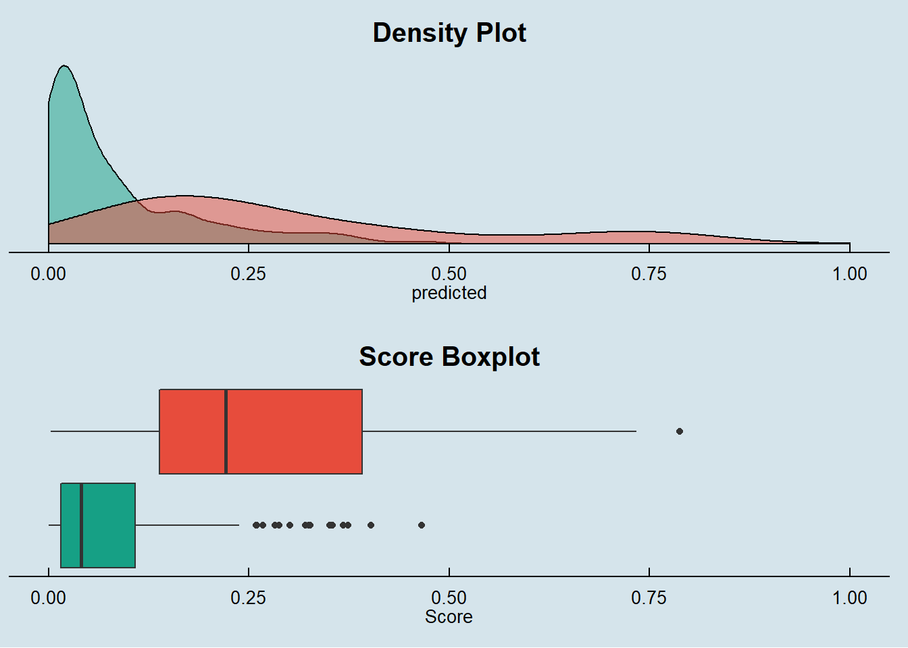
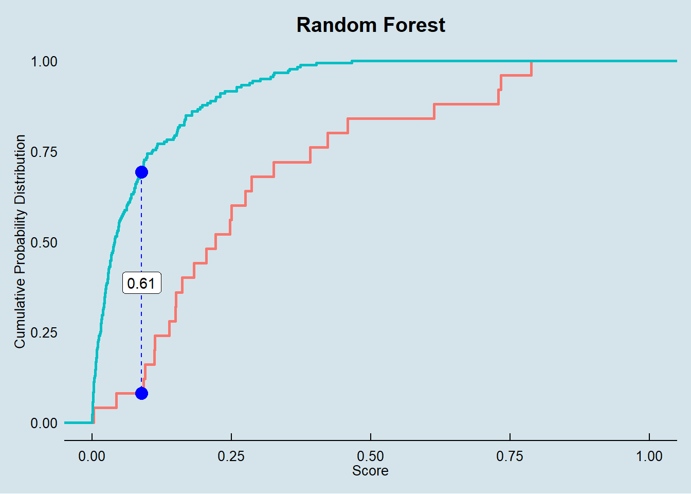

The goal of this session is to fit a Random Forest model on Loan data aiming to predict the probability of delinquency for each contract.
Random forest, in essence, consists of a large set of individual decision trees operating as an ensemble. Therefore, each individual tree in the random forest spits out a class prediction and the class with the most votes becomes our model’s prediction.
The fundamental concept behind random forest is a simple but powerful one — the wisdom of crowds. In data science speak, the reason that the random forest model works so well is: A large number of relatively uncorrelated models (trees) operating as a committee will outperform any of the individual constituent models.
The RF algorithm is a supervised algorithm that, even though it can be used for regression purposes, it was initially conceived as a classification tool.
The method follows the same concept as a decision tree but with the power of the crowd. So, basically, instead of using one big, deep and complex tree, the method relies on multiple randomly different (in multiple ways) trees voting for a class. This method usually perform better better than one very well trained tree even if, individually, the trees are not as good classifiers, thus refering to the forementioned wisdom of the crowds.
Random forest thrives even in scenarios, when there is an abundance of chaos, i.e. many predictors. It’s hard to know which predictor is important and which is not. All the other traditional statistical techniques might fail or struggle when we have an incredibly high number of independent variables.
Because of the voting system inherent to the method it is often said to be democratic algorithm.
Now, if you think for a second, this is the way direct democracy works: each voter has access to a subset of the information and only sees that subset from a particular perspective (their own unique perspective). By using a majority vote, we are actually implementing a Random Forest.
Using the vanilla transaction dataset, we calculated several derived variables for each account as described in the Data Preparation session.
This dataset is joined with Loan, Client, Credit Card, District, Account and Account Balance tables.
We ended up having a dataset with 118 variables.
| variables |
|---|
| y_loan_defaulter |
| x_account_balance |
| x_average_salary |
| x_avg_account_balance |
| x_card_age_month |
| x_card_type_classic |
| x_card_type_gold |
| x_card_type_junior |
| x_client_age |
| x_client_gender_male |
| x_district_name_Benesov |
| x_district_name_Beroun |
| x_district_name_Blansko |
| x_district_name_Breclav |
| x_district_name_Brno_mesto |
| x_district_name_Brno_venkov |
| x_district_name_Bruntal |
| x_district_name_Ceska_Lipa |
| x_district_name_Ceske_Budejovice |
| x_district_name_Cesky_Krumlov |
| x_district_name_Cheb |
| x_district_name_Chomutov |
| x_district_name_Chrudim |
| x_district_name_Decin |
| x_district_name_Domazlice |
| x_district_name_Frydek_Mistek |
| x_district_name_Havlickuv_Brod |
| x_district_name_Hl.m._Praha |
| x_district_name_Hodonin |
| x_district_name_Hradec_Kralove |
| x_district_name_Jablonec_n._Nisou |
| x_district_name_Jesenik |
| x_district_name_Jicin |
| x_district_name_Jihlava |
| x_district_name_Jindrichuv_Hradec |
| x_district_name_Karlovy_Vary |
| x_district_name_Karvina |
| x_district_name_Kladno |
| x_district_name_Klatovy |
| x_district_name_Kolin |
| x_district_name_Kromeriz |
| x_district_name_Kutna_Hora |
| x_district_name_Liberec |
| x_district_name_Litomerice |
| x_district_name_Louny |
| x_district_name_Melnik |
| x_district_name_Mlada_Boleslav |
| x_district_name_Most |
| x_district_name_Nachod |
| x_district_name_Novy_Jicin |
| x_district_name_Nymburk |
| x_district_name_Olomouc |
| x_district_name_Opava |
| x_district_name_Ostrava_mesto |
| x_district_name_Pardubice |
| x_district_name_Pelhrimov |
| x_district_name_Pisek |
| x_district_name_Plzen_jih |
| x_district_name_Plzen_mesto |
| x_district_name_Plzen_sever |
| x_district_name_Prachatice |
| x_district_name_Praha_vychod |
| x_district_name_Praha_zapad |
| x_district_name_Prerov |
| x_district_name_Pribram |
| x_district_name_Prostejov |
| x_district_name_Rakovnik |
| x_district_name_Rokycany |
| x_district_name_Rychnov_nad_Kneznou |
| x_district_name_Semily |
| x_district_name_Strakonice |
| x_district_name_Sumperk |
| x_district_name_Svitavy |
| x_district_name_Tabor |
| x_district_name_Tachov |
| x_district_name_Teplice |
| x_district_name_Trebic |
| x_district_name_Trutnov |
| x_district_name_Uherske_Hradiste |
| x_district_name_Usti_nad_Labem |
| x_district_name_Usti_nad_Orlici |
| x_district_name_Vsetin |
| x_district_name_Vyskov |
| x_district_name_Zdar_nad_Sazavou |
| x_district_name_Zlin |
| x_district_name_Znojmo |
| x_last_transaction_age_days |
| x_loan_amount |
| x_loan_duration |
| x_loan_payments |
| x_no_of_cities |
| x_no_of_commited_crimes_1995 |
| x_no_of_commited_crimes_1996 |
| x_no_of_enterpreneurs_per_1000_inhabitants |
| x_no_of_inhabitants |
| x_no_of_municip_2000_to_9999 |
| x_no_of_municip_500_to_1999 |
| x_no_of_municip_greater_10000 |
| x_no_of_municip_inhabitants_less_499 |
| x_prop_household |
| x_prop_insurance_payment |
| x_prop_interest_credited |
| x_prop_loan_payment |
| x_prop_old_age_pension |
| x_prop_other |
| x_prop_statement |
| x_ratio_of_urban_inhabitants |
| x_region_central_Bohemia |
| x_region_east_Bohemia |
| x_region_north_Bohemia |
| x_region_north_Moravia |
| x_region_Prague |
| x_region_south_Bohemia |
| x_region_south_Moravia |
| x_transaction_amount |
| x_transaction_count |
| x_unemploymant_rate_1995 |
| x_unemploymant_rate_1996 |
One advantage of Random Forest models is that it does not require heavy feature engineering.
We will only remove x_prop_old_age_pension that we know beforehand to have no variance in the dataset.
Mainly beacause of the ramdomness in variable selection of random forest algorithm, this model is not sensible to outliers, missing values and multicollinearity.
The available data in Loan Dataset is split into Train and Testing data on the following proportion:
We are selecting exact the same samples for all models to allow comparison between then.
SplitDataset <- source_train_test_dataset
data.train_rf <- SplitDataset$data.train
data.test_rf <- SplitDataset$data.test
kable(SplitDataset$event.proportion)| scope | 0 | 1 |
|---|---|---|
| full dataset | 0.8885630 | 0.1114370 |
| train dataset | 0.8933054 | 0.1066946 |
| test dataset | 0.8774510 | 0.1225490 |
loan_dataset_rf$y_loan_defaulter <- as.factor(loan_dataset_rf$y_loan_defaulter)
data.train_rf$y_loan_defaulter <- as.factor(data.train_rf$y_loan_defaulter)
data.test_rf$y_loan_defaulter <- as.factor(data.test_rf$y_loan_defaulter)
data.train_rf <- dplyr::select(data.train_rf, names(loan_dataset_rf))
data.test_rf <- dplyr::select(data.test_rf, names(loan_dataset_rf))Both datasets kept the same proportion for the explained variable at about 11%.
The R community is a one of R’s best features. There are many community members doing awesome improvements on existent libraries as well as sharing and spreading knowledge to the four corners of the Earth (if you still think the Earth is flat and square as I do).
Th algorithm selected from randomForest package (Please, see References to reach out this amazing package) have two main parameters for random forest algorithm tuning: mtry representing the number of variables randomly sampled as candidates at each split (or the size of the trees) and ntree representing the number of trees to grow (or the size of the forest).
Another great package for modeling is caret (seriously, check this one out in references, it is fantastic in so many ways!) and, for the sake of our sanity, it has already implemented a good method for randomForest’s package parameter tuning (cheers to them!). This, with the expanded grid search (also from caret package), provides a high performance, friendly and intelligent way of testing parameters. Unfortunately, it is not a perfect world and the implemented method only tune mtry parameter.
In order to have both parameters tuned using expanded grid search we need to extend caret’s methodology, creating a custom method for parameter tuning and, for that, even under the risk of being repetitive, we must say: we can be saved by the grace of of R’s community!
There are a lot of implementations accross the internet, however, a good example (and apparently an original one) is provided by Jason Brownlee, who created this customized function supports mtry AND ntree parameter tuning together. Please, see references page for Jason’s credits (cheers to him!).
Below is his implementation to be further used in our RF training.
customRF <- list(type = "Classification", library = "randomForest", loop = NULL)
customRF$parameters <- data.frame(parameter = c("mtry", "ntree"),
class = rep("numeric", 2),
label = c("mtry", "ntree"))
customRF$grid <- function(x, y, len = NULL, search = "grid") {}
customRF$fit <- function(x, y, wts, param, lev, last, weights, classProbs, ...) {
randomForest(x, y, mtry = param$mtry, ntree=param$ntree, ...)
}
customRF$predict <- function(modelFit, newdata, preProc = NULL, submodels = NULL)
predict(modelFit, newdata)
customRF$prob <- function(modelFit, newdata, preProc = NULL, submodels = NULL)
predict(modelFit, newdata, type = "prob")
customRF$sort <- function(x) x[order(x[,1]),]
customRF$levels <- function(x) x$classesMoving further, we can now set up our expanded grid search using our customized RF train method to test multiple parameters and its different combinations. After that, caret’s method will automatically select best model according to the metric we defined (in our case, accuracy). Moreover, to provide a reliable method of training to avoid (as well as we can) overfitting, we used repeated k-fold cross validation as train control - also provided by caret’s package (we warned you, this is, indeed, an amazing package!).
control <- trainControl(method="repeatedcv",
number=5,
repeats=3,
verboseIter = TRUE,
allowParallel = TRUE)
tuneparam <- expand.grid(.mtry=c(5, 25, 50, 75, 85, 100, 115, 125, 150, 175, 200),
.ntree=c(1000, 3000, 5000, 7000, 9000, 10000))
evalmetric <- "Accuracy"
set.seed(12345)
ini <- Sys.time()
cat(paste0("\nStarted RF training at: ", ini, " ...\n\n"))
rf.full <- train(y_loan_defaulter ~ .,
data=data.train_rf,
method=customRF,
metric=evalmetric,
tuneGrid=tuneparam,
trControl=control,
importance=TRUE)
elapsedTime <- difftime(Sys.time(), ini, units = "auto")
cat(paste0("\n\nFinished RF training. Total time taken: ", round(elapsedTime, 2), " ", units(elapsedTime)))
summary(rf.full)
plot(rf.full)After some cups of coffee (and maybe some time spent on your preferred streaming provider), we have the training finished. And the winners are…:
Last but not least, we saved the final model results on disk to be quickly consumed when necessary.
So, to save time, we only have to load the fitted model saved on disk.
For this model the four principal vars are:
The result is similar to the Logistic Regression, Decision Tree and Boosting models.
Here we will perform basically the same steps we did in the Logistic Regression, Decision Tree and Boosting models.
A comparison against all the models will be provided in the Final Report session of this exercise.
We started this step by making predictions using our model on the X’s variables in our Train and Test datasets.
## making preditions for each model and consolidating in a single data frame
prob.full = list()
prob.train = list()
prob.test = list()
prob.full$randomforest.actual <- loan_dataset_rf$y_loan_defaulter
prob.full$randomforest.predicted <- predict(rf.full, newdata = loan_dataset_rf,
type = "prob")[,2]
prob.train$randomforest.actual <- data.train_rf$y_loan_defaulter
prob.train$randomforest.predicted <- predict(rf.full, newdata = data.train_rf,
type = "prob")[,2]
prob.test$randomforest.actual <- data.test_rf$y_loan_defaulter
prob.test$randomforest.predicted <- predict(rf.full, newdata = data.test_rf,
type = "prob")[,2]
prob.full <- prob.full %>% as_tibble()
prob.train <- prob.train %>% as_tibble()
prob.test <- prob.test %>% as_tibble()To calculate the performance measures, derived from the confusion matrix, we need to find the score cut off that best split our test dataset into Defaulters and Non-Defaulters.
In this exercise we decide to not prioritize the accuracy on predicting Defaulters and Non-Defaulters, therefore we are looking for the score cut off that best predict each class equally.
With the returned object from this function we can plot the comparison between TPR (True Positive Rate) and TNR (True Negative Rate) to find the best cut off.
## getting measures -----------------------------------------------------------------
metricsByCutoff.test_randomforest <- modelMetrics(prob.test$randomforest.actual,
prob.test$randomforest.predicted,
plot_title = 'Random Forest')
metricsByCutoff.test_randomforest$PlotWith the optimized cut off we calculate the full set of model metrics using the function HMeasure from hmeasure library (another very good package! Don’t forget to check for our references).
# Random Forest
measures.randomforest.train <- HMeasure(prob.train$randomforest.actual,
prob.train$randomforest.predicted,
threshold = metricsByCutoff.test_randomforest$BestCut['Cut'])
measures.randomforest.test <- HMeasure(prob.test$randomforest.actual,
prob.test$randomforest.predicted,
threshold = metricsByCutoff.test_randomforest$BestCut['Cut'])
# join measures in a single data frame
measures <- t(bind_rows(measures.randomforest.train$metrics,
measures.randomforest.test$metrics
)) %>% as_tibble(., rownames = NA)
colnames(measures) <- c('random forest - train', 'random forest - test')
measures$metric = rownames(measures)
measures <- dplyr::select(measures, metric, everything())Below are the metrics on the train and test dataset:
| metric | random forest - train | random forest - test |
|---|---|---|
| H | 1.0000000 | 0.4248541 |
| Gini | 1.0000000 | 0.6808939 |
| AUC | 1.0000000 | 0.8404469 |
| AUCH | 1.0000000 | 0.8654749 |
| KS | 1.0000000 | 0.6239106 |
| MER | 0.0000000 | 0.0980392 |
| MWL | 0.0000000 | 0.0808824 |
| Spec.Sens95 | 1.0000000 | 0.5139665 |
| Sens.Spec95 | 1.0000000 | 0.3200000 |
| ER | 0.0460251 | 0.2303922 |
| Sens | 1.0000000 | 0.7600000 |
| Spec | 0.9484778 | 0.7709497 |
| Precision | 0.6986301 | 0.3166667 |
| Recall | 1.0000000 | 0.7600000 |
| TPR | 1.0000000 | 0.7600000 |
| FPR | 0.0515222 | 0.2290503 |
| F | 0.8225806 | 0.4470588 |
| Youden | 0.9484778 | 0.5309497 |
| TP | 51.0000000 | 19.0000000 |
| FP | 22.0000000 | 41.0000000 |
| TN | 405.0000000 | 138.0000000 |
| FN | 0.0000000 | 6.0000000 |
Our RF model clearly overfitted (as we can see by most of metrics, AUC of 1.0 in train set and 0.84 in test set, for example). This happened mainly because of the size of our dataset.
This model delivered an amazing result but not the best one (beaten by the boosting model). We have a full session to compare how it performed against other models in the Final Report session. But wait, you should’t hurry, there are still some steps to evaluate RF algorithm.
Below the confusion matrix and general performance of the model:
# accuracy metrics ---------------------------------------------------------------
# random forest
accuracy(score = prob.test$randomforest.predicted,
actual = prob.test$randomforest.actual,
threshold = metricsByCutoff.test_randomforest[["BestCut"]][["Cut"]])##
##
## pred.1 pred.0
## --------- ------- -------
## actual.1 19 6
## actual.0 41 138
## [1] "--------------------------------------------------------------"
## [1] "Model General Accuracy of: 76.96%"
## [1] "True Positive Rate of : 76%"We finally look at the score distribution charts to check how well the model is able to discriminate Defaulters and Non-Defaulters.
p1 <- Score_Histograms(prob.test,
prob.test$randomforest.predicted,
prob.test$randomforest.actual,
'Density Plot') + theme(axis.title.y = element_blank())
p2 <- Score_Boxplot(prob.test,
prob.test$randomforest.predicted,
prob.test$randomforest.actual,
'Score Boxplot')
p3 <- KS_Plot(prob.test$randomforest.predicted[prob.test$randomforest.actual == 0],
prob.test$randomforest.predicted[prob.test$randomforest.actual == 1],
'Random Forest')
ggarrange(p1, p2, nrow = 2)

By the score density we see that our Random Forest model provides a narrow and precise discrimination around defaulters.
The box plot also shows a clear discrimination between Defaulters and Non-Defaulters.
Finally, the KS metric is also presented a good result for a reliable classification purpose.
In the Final Report session, we will look more closely on the AUC and Gini metrics by plotting the ROC curve and comparing against other models.
Stay tuned!!!